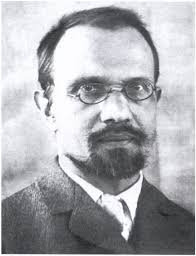
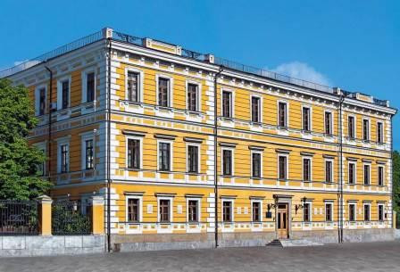
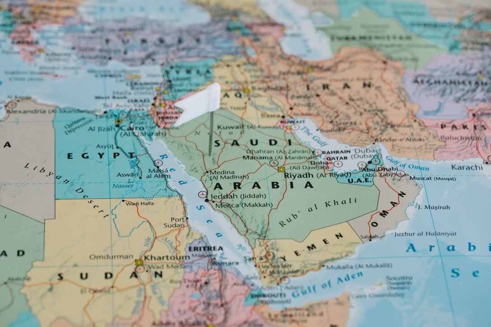

Презентація з історії України
Учениці 9-Б класу Стандричук Анни
Тема: Агатангел Кримський - людина яка знала 60 мов

Хто такий Агатангел Кримський
- Народився: 3 січня 1871, Володимир-Волинський
- Помер: 25 січня 1942 у Києві
- Лінгвіст, історик, письменник, перекладач
- Один із засновників Академії наук України
- Знав понад 60 мов

Його знання і мови
- Знав: арабську, перську, турецьку, китайську, японську, санскрит, латинь, грецьку, іврит та інші
- Вивчав мови самостійно, без репетиторів
- Вивчав релігії, звичаї і культуру Сходу
Наукова та літературна діяльність
- Заснував історію ісламських народів в Україні
- Переклав українською мовою Коран
- Писав наукові праці, казки, вірші
- Автор понад 1000 наукових робіт

Академія наук України
- Один із засновників АН України
- Перший її неформальний керівник
- Вплинув на розвиток науки, філології та орієнталістики в Україні
Чому про нього забули
- У 1930-х — репресії Сталіна
- Звинувачений у “буржуазному націоналізмі”
- Засуджений, ув’язнений, помер у тюрмі
- Лише через багато років про нього знову згадали
Цікаві факти
- Навіть у тюрмі писав наукові тексти!
- Один із перших українців, хто переклав Коран
- У Європі вважали його генієм
- Сам говорив: «Я був українцем не з книжок, а з душі»
- 14 років писав книжки!
- Уже в підлітковому віці перекладав вірші з перської, арабської та латинської мов
- Вивчив японську мову ще до того, як Японію “відкрили” для світу
- Жив у Лівані, Єгипті, Сирії, щоб краще зрозуміти культуру і мову
- Його праці вивчають навіть за кордоном (Японія, Туреччина, Франція)
- Його рід походив із кримських татар, але він був палким українцем
- Навіть під тортурами не зрікся України
Чому це важливо
- Агатангел Кримський — приклад того, що українці можуть бути світовими геніями
- Його життя — це поєднання науки, культури і любові до України
- Агатангел Кримський — наш український Леонардо да Вінчі
- Генієм не народжуються, а стають завдяки знанням і любові до свого народу